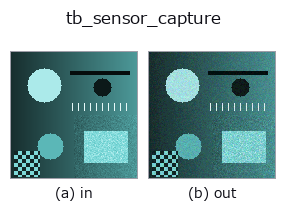

typed op• Datenarten: rgbimage → rgbimage
• Aufruf: fullseye.apply(img, "tb_sensor_capture", a=0.5, b=0.5) (das 2-D-Modell ist ein Bild plus zwei skalare Regler a,b∈[0,1])

*Die Abbildung ist die tatsächliche Ausgabe auf einer synthetischen 128×128-Eingabe. Links Eingabe, rechts Ausgabe. Punktwolken als Draufsicht-Streudiagramm (Helligkeit = z), 1-D-Reihen als Linie, Volumen als Maximum-Projektion entlang z, Videos als mittleres Bild, komplexe Bilder als Betrag; Rückgabewerte, die kein Bild ergeben, werden als Werte gezeigt.*
Regler a durchfahren (0,1 / 0,5 / 0,9, der andere Regler auf Standard):
▸ tb_sensor_capture: knob a sweep (docs site)
Regler b durchfahren (0,1 / 0,5 / 0,9, der andere Regler auf Standard):
▸ tb_sensor_capture: knob b sweep (docs site)
Stufen (die vorangehenden Ops → dieser Op, von links nach rechts):
▸ tb_sensor_capture: stages (docs site)
Auf anderen Bildern (synthetische Szene / Foto / Münzen. Obere Reihe: Eingaben, untere Reihe: deren Ausgaben. Regler auf Standard):
▸ tb_sensor_capture: other inputs (docs site)
Strahldichte → Ausgabe eines realen Sensors (Schrotrauschen, Ausleserauschen, Sättigung, Quantisierung).
> Die ausführliche Beschreibung unten ist der Originaltext — Zusammenfassung und Überschriften sind übersetzt.
光子数 = radiance · exposure_ms · gain_e_per_unit / 1000 を平均とする Poisson。
そこへ読み出し雑音(正規)を足し、`full_well_e で**飽和**させ、bit_depth`
で量子化する。飽和は clip であって折り返さない(白飛びは白のまま)。
返り値は 0..2^bit_depth−1 の整数配列。`seed` を固定すれば決定的。
2-D 進化レジストリへ橋渡しした optics の op `sensor_capture。実装は同じで、呼び出し規約だけ op(v, a, b) に合わせてある。a が exposure_ms(既定 10)、b が gain_e_per_unit`(既定 50000)を振る。
• Katalog der Beispieldaten (Download-URLs / Lizenzen) — 2-D nutzt skimage.data (BSD/Public Domain) plus synthetische Bilder, 3-D nennt Download-URLs echter Datenquellen (Stanford, PDS, …).
• Herkunft und Literatur der Operatoren — die Quellen der Forschung/Verfahren, auf denen diese Operatorfamilie beruht.
Das Programm unten ist nachweislich lauffähig (gleiche Eingabe wie die Abbildung). In der Studio-Hilfe wird dieser Block zu Schaltflächen, die es sofort laden und ausführen.
img_to_rgb 0.50 0.50 tb_sensor_capture 0.50 0.50
▸ Load this pipeline · Load & run
Die folgenden Beispiele rufen den zugrunde liegenden Ledger-Op sensor_capture auf. Dieser Brücken-Op ist dieselbe Implementierung, angepasst an die Konvention fn(v, a, b); das Verhalten gilt unverändert (nur die Aufrufform unterscheidet sich).
• vision_layout_from_catalog — py -3.11 examples/vision_layout_from_catalog.py
rgbimage als Eingabe)identity · tb_wetness · tb_specular_diffuse_split · tb_specular_coefficient_map · tb_specular_free_transform · tb_rgb_to_quaternion
typed)tb_points_to_voxel · tb_estimate_point_normals · tb_iss_keypoints · tb_project_points · tb_render_point_depth · tb_statistical_outlier_removal · tb_radius_outlier_removal · tb_voxel_grid_downsample
*Provenance: ops.py — 2D Operator-Registry. Diese Notiz wird von tools/opdocs.py md erzeugt (nicht von Hand bearbeiten).*
© 2026 Kazufumi Furuse — Fullseye operator documentation. Licensed under Apache-2.0.
{kind=link}
{kind=link}
{kind=link}
{kind=link}